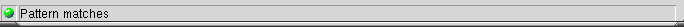

An Example
In this example we will create a trivial domain name parser. This is not
intended to be the best example of using Kodos, rather, it will focus on using
as many features as possible.
First, let us enter our regular expression. This regular expression
will use group names to capture the host, domain and the domain class as well as the port number. Additionally, an unnamed group will be
captured which seperates the class from the port (for the sole purpose of demonstration).
Fig. Our regular expression
In this case, we would like the make this case-insensitive, so we select
the appropriate flags checkbox
Fig. Ignoring case
We will then enter a partial string. We can see from the status bar that
this string does not match our regular expression
Fig. Our initial string

Fig. Pattern does not match or there is a syntax error
Finally, we enter our string in it's entirety. Upon doing so, our status will indicate success and our groups will appear in the "groups" list.
Fig. Our final string

Fig. Pattern successfully matches the input string
Fig. The groups list
If we used this regular expression in a python application, we could
retrieve the group data as such:
| by group number |
by group name |
match |
| re.group(1) |
re.group('host') |
www |
| re.group(2) |
re.group('domain') |
supplysolution |
| re.group(3) |
re.group('class') |
com |
| re.group(4) |
Not applicable |
: |
| re.group(5) |
re.group('port') |
80 |
The matching string can be seen by viewing the "match" output tab
Fig. The groups list
Phil Schwartz
Last modified: Wed Feb 19 01:50:58 PST 2003